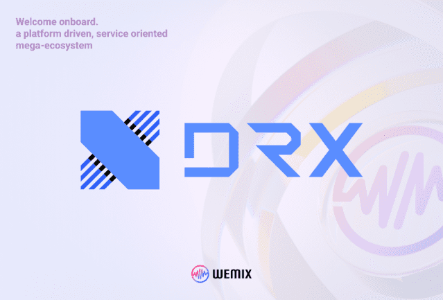

위메이드(대표 장현국)는 DRX(대표 최상인)와 이스포츠-블록체인 연계 파트너십을 위한 MOU를 체결했다.
DRX LoL 팀의 올 시즌은 ‘소년 만화’라고 해도 좋을 정도로 드라마틱했다. LCK 4번 시드로 진출했지만, 역대 최초로 플레이-인 스테이지부터 모든 라운드를 거치며 파이널까지 올랐다. DRX는 유력한 우승 후보들을 하나하나 꺾었고, 지난 6일(한국시간) ‘2022 LoL 월드 챔피언십’(롤드컵) 결승전에서는 정상급 팀 T1과의 접전 끝에 3대 2로 세계 챔피언에 올랐다.
이스포츠와 블록체인에서 선도자의 위치에 있는 DRX와 위메이드는 새로운 시장과 사업 기회를 함께 탐구하고 협력하기로 했다.최상인 DRX 대표는 “DRX와 위메이드 양사의 축적된 데이터와 글로벌 네트워크를 바탕으로 함께 성장할 것을 기대한다”고 전했다.장현국 위메이드 대표는 "이스포츠는 미래지향적으로 계속 진화해 나가고 있다는 점에서 블록체인과 가장 잘 어울리는 스포츠"라며 “이스포츠를 선도하고 있는 DRX와 함께 스포츠 분야의 새로운 디지털 이코노미에 도전할 것”이라고 덧붙였다.
위메이드는 지난 달 말 자체 메인넷 위믹스3.0을 성공적으로 오픈했다. 국내외 여러 기업 및 프로젝트들과 협업하는 광폭 행보를 계속하고 있으며, 특히 최근에는 마이크로소프트, 신한자산운용, 키움증권으로부터 660억 원 규모의 투자를 유치했다.